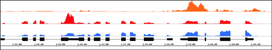
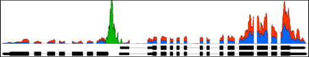

Everything you need in a genome browser
The Integrated Genome Browser (IGB) is an open-source tool for visualizing genome-scale datasets.
IGB is designed for both biologists and bioinformaticians, and is used by thousands of researchers
at hundreds of universities around the world. Find out how IGB can help push your research forward with its many features,
ease of use, and wealth of support documentation.
Need help getting started with IGB? Contact us for help or to schedule a tutorial.
Display your own data
View data from aligned sequences, annotations, and more (BAM, BED, GFF3). Overlap multiple datasets and customize each track's color. Or make a heatmap of the data.
- Accepted file formats
- Set up a heatmap
{kind=link}

{kind=link}
{kind=link}
View and interact
Fly through your data using IGB's fast, animated zooming and rapid panning. Interact with your data by selecting or right-clicking features.
- Moving in IGB
- Data interaction
Load any genome
IGB provides access to many genomes via IGB Quickloads. You can also view your own custom genomes.
- Load custom genomes
{kind=link}
Find more with BLAST and Google
Use IGB’s right-click search to BLAST a feature. Find more by using Web Search via Google, or other model-specific search tools as LinkOuts.
- Right-click search menu
- Linkouts
{kind=link}
Make and view graphs
Make, customize, and save graphs from your data. Use depth graphs to show coverage, or mismatch graphs to count differences between your data and a reference. IGB can view many graph types, including BEDGRAPH and Wiggle.
- Creating graphs
- Customizing graphs
{kind=link}

{kind=link}
Save publication quality images
Choose between 72-1000 ppi as a png or jpeg, or as an svg vector graphic.
- Saving images
- Image gallery
{kind=link}
Advanced Features
Share data
Build an IGB QuickLoad to share data between collaborators. Store your data in the cloud to provide access to everyone involved in the project. Or share analysis results using Bookmarks.
- Quickload walkthrough
- Using bookmarks
{kind=link}
Search for motifs and sites
Use the advanced search functionality to find motifs, or input your primers to visualize their position and orientation. You can also use the restriction sites tab to locate restriction sites.
- Advanced search
- Restriction sites tab
{kind=link}
Develop and enable Plug-ins
Select and install Plug-ins through the IGB App Manager to add additional functionality. You can also make your own plug-ins/apps and share them with the IGB community.
- Installing plug-ins through App Manager
- Creating new plug-ins/apps
{kind=link}
Control IGB using scripts
Automate your workflow by using scripts to specify a genome, go to a region, and save an image. You can even use R to control IGB.
- Scripting
{kind=link}
More Information
For more information about IGB capabilities, visit the IGB User's Guide or the IGB Developer's Guide.